Meus Projetos
Acredito que o meu maior projeto seja esse aqui que vc está vendo,
o meu site portifólio, esse site possui grande quantidade de implantação das matérias estudadas nas aulas de desenvolvimento e publicação de sites.
Além do INDEX, esse site possui as páginas SOBRE MIM, EXPERIÊNCIA PROFISSIONAL, FORMAÇÃO, HABILIDADES, MEUS PROJETOS e CONTATO.
O meu site foi estilizado totalmente por mim e possui as informações que fui criando e adaptando, para que se tornasse um layout
bem atrativo e interessante aos olhos de algum avaliador.
Acredito que o que eu criei com esse projeto seja de grande importancia e utilidade para o desenvolvimento dos meus futuros projetos.
Projeto Intranet Concreserv
A Intranet Concreserv foi criada para que os colaboradores da Empresa CONCRESERV pudessem acessar e compartilhar
informações exclusivas e importantes dos seus setores, tais como documentos, manuais de treinamento, como realizar a abertura de chamado,
ter orientações sobre processos, campanhas, beneficios, anuncios internos, cardápio do dia, ramais, dashboards das areas e muito mais, para que o compartilhamento de informações e automatização de tarefas sejam dissiminadas entre os Funcionários.
INTRANET
Através do NAVBAR o usuário tem acesso aos ramais dos colaboradores, Dashboards dos resultados de todas as áreas,
FAQ que auxilia os usuários com dúvidas frequentes, acesso as informações do restaurante BOA COZINHA, como cardapio
do dia e Anúncios e os links uteis com todos os links utilizados pelos setores.
NAVBAR
Ferramentas utilizadas no desenvolvimento
Utilizamos a ferramenta Visual Studio Code para criar o layout estilizar e trabalhar na aparencia.

O MySQL Workbench foi utilizado na integração com as informações dos ramais dos usuários.
MySQL Workbench.
O Banco de Dados MySQL é responsável por gerenciar as informações de ramais dos funcionarios.
Na parte dos RAMAIS os usuários acessam a lista de ramais de todos os setores.
Ramais.
Imagem do Banco de Dados.
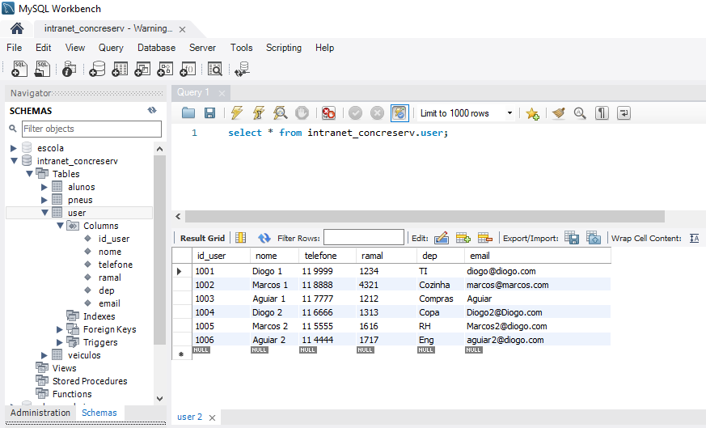
Banco de Dados criado para testes.
Imagem do campo de busca de ramais da intranet.
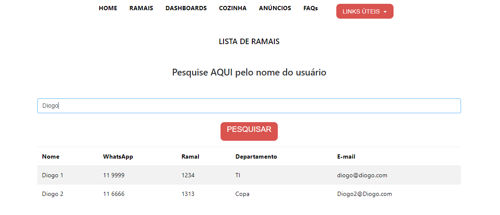
Lista de Ramais.
Busca pelo nome dos usuários.
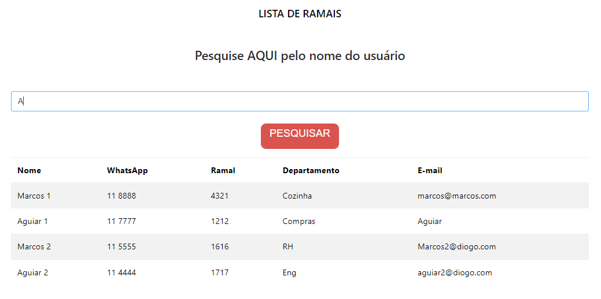
USUÁRIOS CADASTRADOS
Na parte do FAQ podemos acessar as informações de dúvidas frequentes dos usuários,
as informações são coletadas e armazanadas em manuais e documentos para que sejam acessiveis a todos.
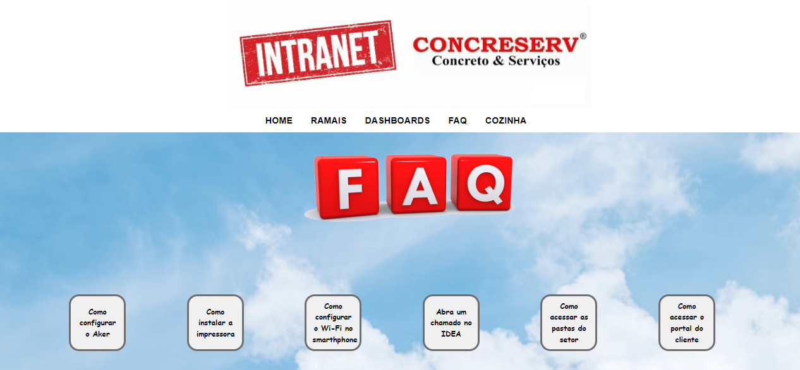
FAQ - DUVIDAS FREQUENTES
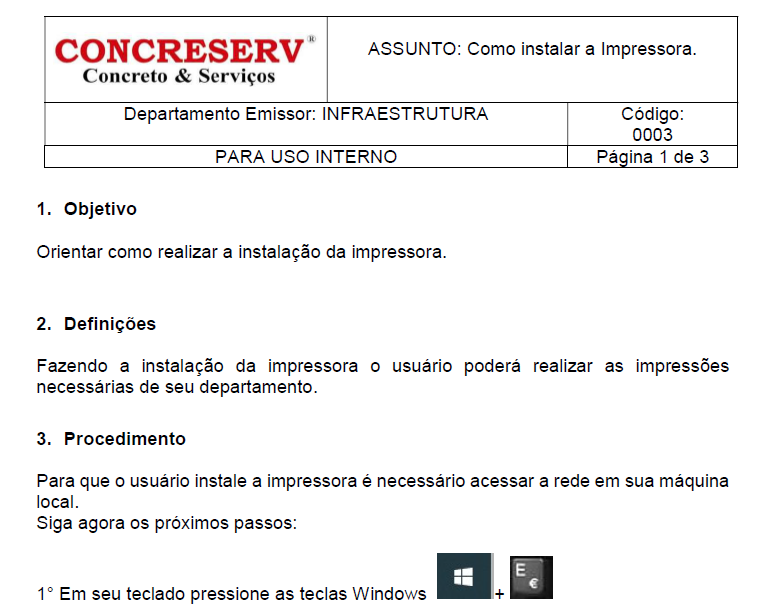
EXEMPLO - COMO INSTALAR A IMPRESSORA
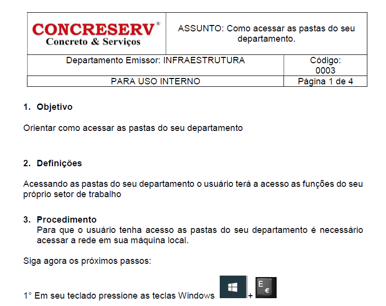
EXEMPLO - COMO ACESSAR AS PASTAS DO SEU DEPARTAMENTO
Na parte dos DASHBOARDS, os colaboradores acessam as informações referente as áreas e seus progressos,
através das informações extraídas pelo GRAFANA.
DASHBOARDS
Na parte da COZINHA, os funcionários acessam o cardápio do dia, as opções de prato principal, prato secundário,
guarnições, sobremesas, opções de prato light e opções Gourmet.
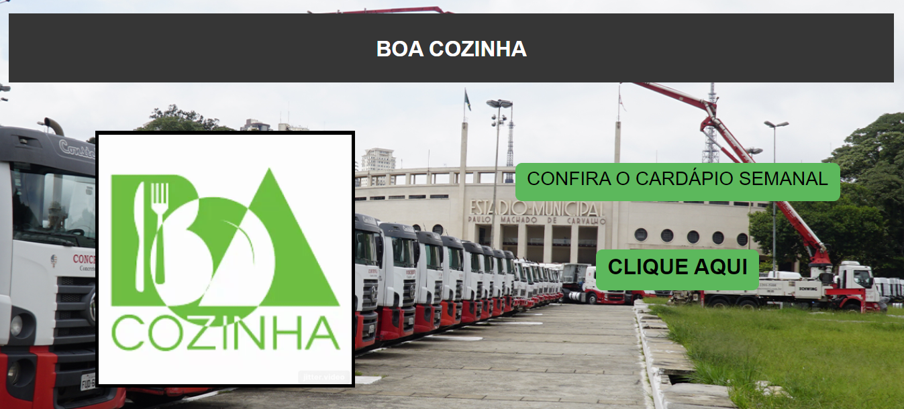
COZINHA
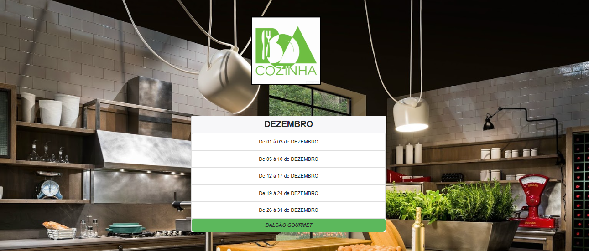
CARDÁPIO DO MÊS
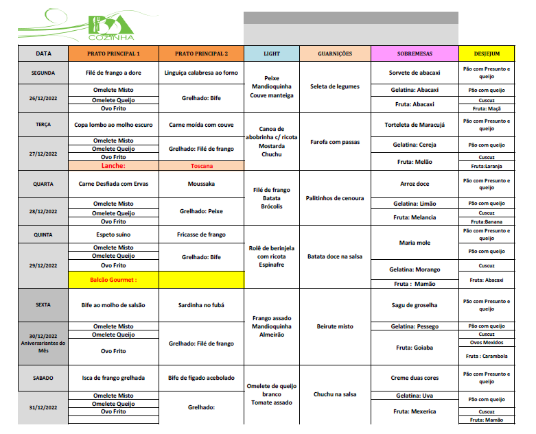
CARDÁPIO DA SEMANA
Na parte de ANÚNCIOS, todos tem acesso aos diversos anuncios dos próprios colaboradores,
incluindo produtos pessoais e de terceiros.
ANÚNCIOS
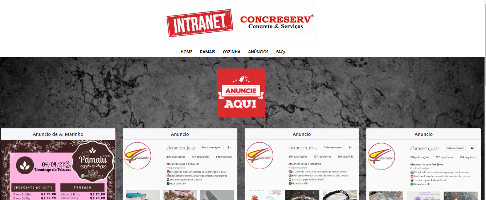
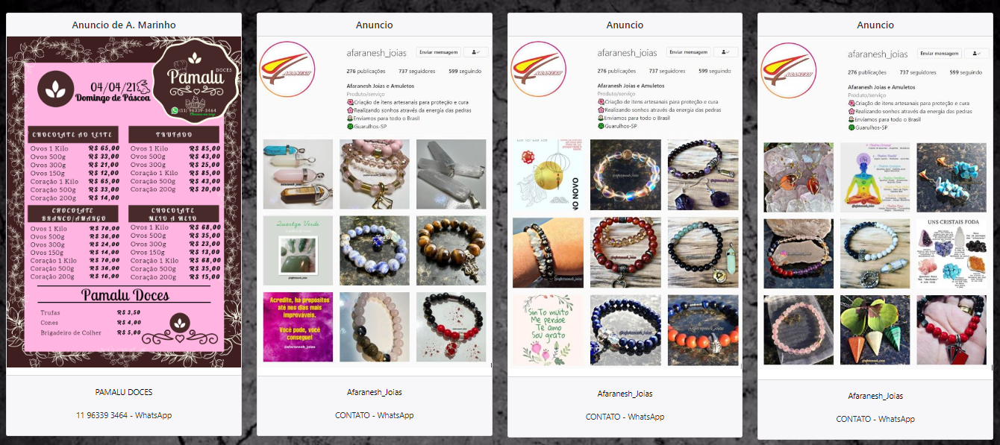
No NAVBAR os usuários tem acesso aos links úteis, qua auxilia no acesso aos diversos sistemas utilizados,
além de disponibilizar o link para a realização do reset de senha dos sistemas, caso tenha expirado ou esquecido a senha de
acesso aos sitemas da empresa e todos os links utilizados pela empresa.
Através do Menu lateral "hamburguer" o usuário acessa todas as
informações do navbar como Ramais dos usuários,
Dashboards dos resultados de todos os setores,
Duvidas Frequentes que auxilia os usuários com dúvidas,
Acesso as informações do restaurante BOA COZINHA.
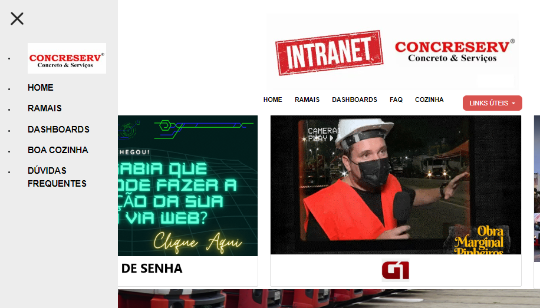
MENU LATERAL
E o Rodapé é simples porem com as informações das redes sociais inclusas.
RODAPÉ
O Visual Studio Code foi a ferramenta principal na criação da Intranet e do desenvolvimento web.
E utilizando as liguagens PHP7, HTML5 e CSS3 para criação dos meus projetos.
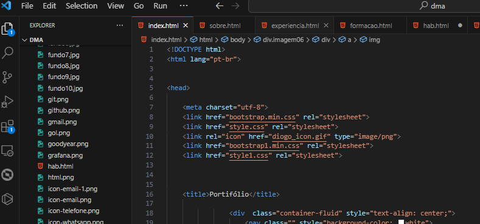


Atuando na solução de problemas dos usuários, participando dos desenvolvimentos e criações,
sempre buscando soluções eficazes e inovadoras para os desafios e demandas tecnológicas.
PROJETO CALCULADORA
A Calculadora foi criada utilizando HTML, CSS e JavaScript.
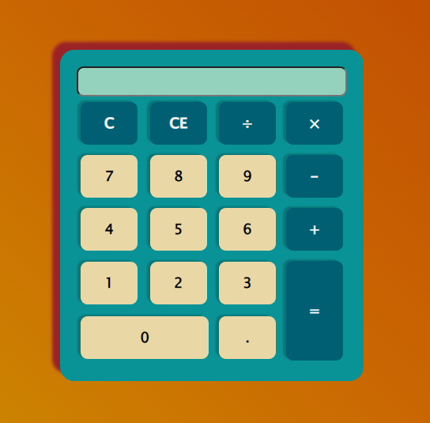
Funcional e Elegante.

Somente 3 arquivos.
index.html

HTML5
script.js

JavaScript
style.css

CSS
PROJETO CONTROLE DE PNEUS
O CONTROLE DE PNEUS foi criado para manter o controle dos gastos causados aos pneus da frota de caminhões da empresa.
Primeiramente devemos cadastrar os veículos no nosso sistema, após cadastrar os veiculos precisamos cadastrar os pneus e suas condições.
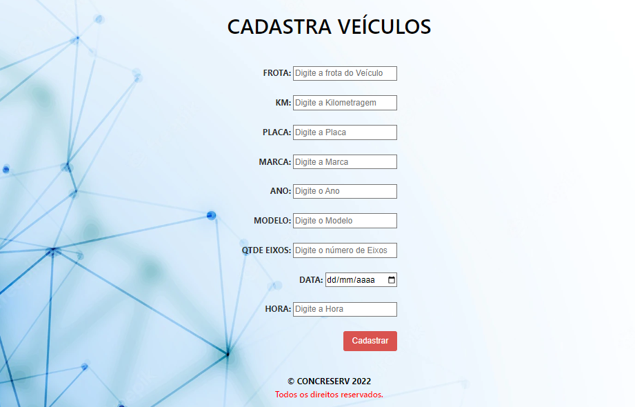
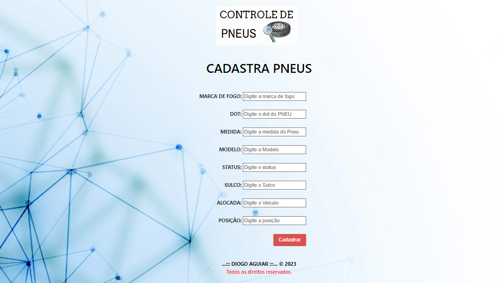
Os pneus devem ser cadastrados todos novos e o sistema deverá por meio de uma programação projetar as condições do pneu durante um
periodo de tempo e atualizar as informações no nosso banco de dados.
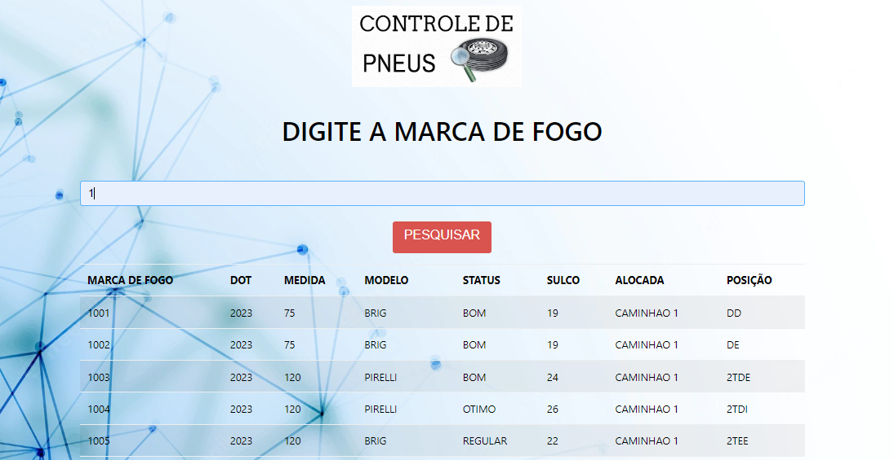
Atualizar as informações apartir do momento em que necessitar de serviços de borracharia por exemplo.
PROJETO PUBLICAÇÃO DE UM SITE SIMPLES
A publicação de um SITE SIMPLES foi criado para fins de teste de publicação através do GITHUB.
Após muitos testes de publicações e fracassos,
esse foi o primeiro site que consegui publicar no GITHUB PAGES,
acredito que tenha sido o site mais simples e sem nenhuma informação
importante, porem o importante foi realizar a publicação.

A partir do momento em que eu consegui publicar, me senti muito feliz e realizado.
Possui um menu de hamburguer que é só pra dar um charme.
Com um rodapé simples e que contém acesso as redes sociais.